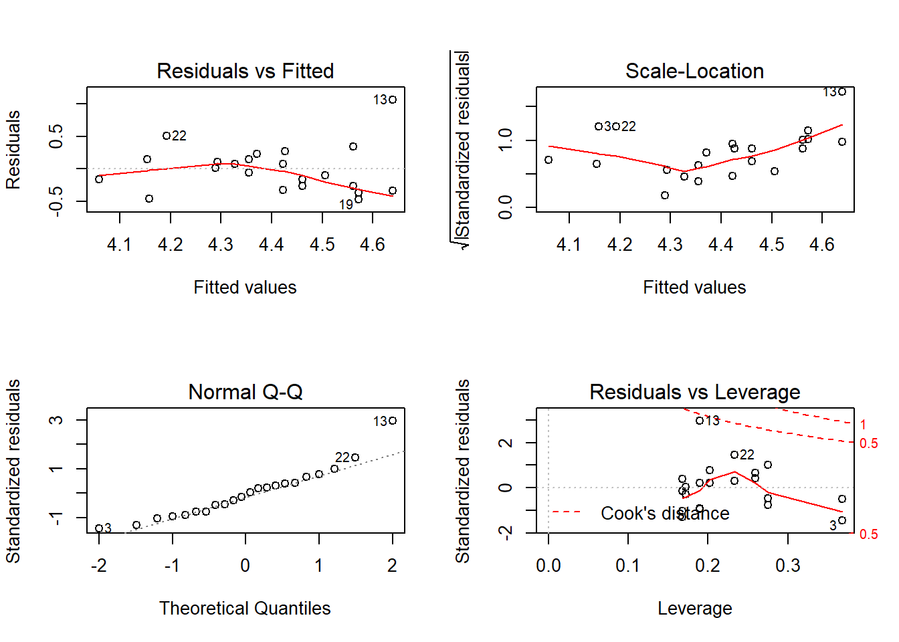

Blood Data Analyses
Last updated: 2020-06-08
Checks: 6 1
Knit directory: Fiber_Intervention_Study/
This reproducible R Markdown analysis was created with workflowr (version 1.6.2). The Checks tab describes the reproducibility checks that were applied when the results were created. The Past versions tab lists the development history.
The R Markdown file has unstaged changes. To know which version of the R Markdown file created these results, you’ll want to first commit it to the Git repo. If you’re still working on the analysis, you can ignore this warning. When you’re finished, you can run wflow_publish to commit the R Markdown file and build the HTML.
Great job! The global environment was empty. Objects defined in the global environment can affect the analysis in your R Markdown file in unknown ways. For reproduciblity it’s best to always run the code in an empty environment.
The command set.seed(20191210) was run prior to running the code in the R Markdown file. Setting a seed ensures that any results that rely on randomness, e.g. subsampling or permutations, are reproducible.
Great job! Recording the operating system, R version, and package versions is critical for reproducibility.
Nice! There were no cached chunks for this analysis, so you can be confident that you successfully produced the results during this run.
Great job! Using relative paths to the files within your workflowr project makes it easier to run your code on other machines.
Great! You are using Git for version control. Tracking code development and connecting the code version to the results is critical for reproducibility.
The results in this page were generated with repository version 774d405. See the Past versions tab to see a history of the changes made to the R Markdown and HTML files.
Note that you need to be careful to ensure that all relevant files for the analysis have been committed to Git prior to generating the results (you can use wflow_publish or wflow_git_commit). workflowr only checks the R Markdown file, but you know if there are other scripts or data files that it depends on. Below is the status of the Git repository when the results were generated:
Ignored files:
Ignored: .Rhistory
Ignored: .Rproj.user/
Ignored: code/.Rhistory
Ignored: reference-papers/Dietary_Variables.xlsx
Ignored: reference-papers/Johnson_2019.pdf
Untracked files:
Untracked: renv/
Untracked: tab/table_1_results.csv
Unstaged changes:
Deleted: .Rprofile
Modified: analysis/analysis_blood_data.Rmd
Modified: analysis/summary_stats.Rmd
Modified: code/get_cleaned_data.R
Note that any generated files, e.g. HTML, png, CSS, etc., are not included in this status report because it is ok for generated content to have uncommitted changes.
These are the previous versions of the repository in which changes were made to the R Markdown (analysis/analysis_blood_data.Rmd) and HTML (docs/analysis_blood_data.html) files. If you’ve configured a remote Git repository (see ?wflow_git_remote), click on the hyperlinks in the table below to view the files as they were in that past version.
| File | Version | Author | Date | Message |
|---|---|---|---|---|
| html | 0733fe5 | noah-padgett | 2020-05-21 | Build site. |
| Rmd | d576bdd | noah-padgett | 2020-05-21 | tables outputted |
| html | d576bdd | noah-padgett | 2020-05-21 | tables outputted |
| Rmd | ef7cab9 | noah-padgett | 2020-05-14 | blood measure analyses |
| html | ef7cab9 | noah-padgett | 2020-05-14 | blood measure analyses |
Overview of aims
What is the effect of Prebiotin vs placebo on blood measures (controlling for diet, age, ethnicity, stress?) Did the intervention effect?
Data
blood_data <- read_excel("data/Blood measures data/Copy of Fiber Study Blood Results.xlsx")
meta_data <- microbiome_data$meta.dat
keepVar <- c("SubjectID", "Week", "Intervention", "Stress.Scale", "Ethnicity", "Gender", "Age")
meta_data <- meta_data [, keepVar] %>%
filter(Week == 1)
mydata <- full_join(blood_data, meta_data)Joining, by = "SubjectID"# recoding
mydata <- mydata %>%
mutate(female = ifelse(Gender == "F", 1, 0),
c.age = Age - mean(Age),
IntB = ifelse(Intervention == "B", 1, 0),
Post = ifelse(time == "Post", 1, 0),
c.stress = Stress.Scale - mean(Stress.Scale),
hispanic = ifelse(Ethnicity %in% c("White", "Asian", "Native America"), 1, 0))
# for plotting
plot.data <- mydata[, c(colnames(mydata)[c(1:18,20:24)])]
plot.data <- plot.data %>%
pivot_longer(cols=colnames(mydata)[3:18],
names_to = "Variable",
values_to = "value")Data summary
Summary Statistics
varNames <- c(colnames(mydata)[c(2:18,20)])
sum.dat <- mydata[,varNames[2:17]] %>%
summarise_all(list(Mean=mean, SD=sd,
min=min, Median=median, Max=max))
sum.dat <- data.frame(matrix(unlist(sum.dat), ncol=5))
colnames(sum.dat) <- c("Mean", "SD", "Min", "Median", "Max")
rownames(sum.dat) <- varNames[2:17]
kable(sum.dat, format="html", digits=3)%>%
kable_styling(full_width = T)| Mean | SD | Min | Median | Max | |
|---|---|---|---|---|---|
| Glucose | 93.591 | 8.857 | 84.00 | 93.500 | 128.00 |
| BUN | 12.636 | 2.194 | 7.00 | 12.500 | 16.00 |
| Creatinine | 0.820 | 0.088 | 0.61 | 0.820 | 0.99 |
| Sodium | 141.682 | 1.810 | 138.00 | 142.000 | 145.00 |
| Potassium | 4.400 | 0.393 | 3.70 | 4.300 | 5.70 |
| Chloride | 102.500 | 1.871 | 99.00 | 102.500 | 107.00 |
| Carbon_Dioxide | 24.955 | 2.299 | 21.00 | 25.500 | 30.00 |
| Calcium | 9.327 | 0.319 | 8.70 | 9.300 | 9.80 |
| Cholesterol | 180.409 | 39.740 | 118.00 | 179.500 | 261.00 |
| Triglycerides | 116.864 | 90.611 | 46.00 | 96.500 | 415.00 |
| HDL | 60.091 | 14.671 | 37.00 | 59.000 | 96.00 |
| LDL | 97.577 | 33.402 | 45.00 | 87.000 | 171.00 |
| LDL_HDL_Ratio | 1.697 | 0.771 | 0.63 | 1.365 | 3.45 |
| hsCRP | 1.973 | 2.466 | 0.30 | 0.900 | 10.70 |
| Insulin | 17.091 | 27.233 | 3.00 | 8.000 | 101.00 |
| PYY | 103.329 | 175.191 | 16.56 | 36.215 | 742.90 |
Summary of these data by Intervention Group
varNames <- colnames(mydata)[c(20,3:18)]
sum.dat <- mydata[,varNames] %>%
group_by(Intervention) %>%
summarise_all(list(Mean=mean, SD=sd,
min=min, Median=median, Max=max))
a <- data.frame(matrix(unlist(sum.dat[1,-1]), ncol=5))
b <- data.frame(matrix(unlist(sum.dat[2,-1]), ncol=5))
a <- cbind(rep("A", 16), a); colnames(a) <- c("Intervention", "Mean", "SD", "Min", "Median", "Max")
b <- cbind(rep("B", 16), b); colnames(b) <- c("Intervention", "Mean", "SD", "Min", "Median", "Max")
sum.dat <- rbind(a,b)
sum.dat <- data.frame(Variable=rep(varNames[-1],2), sum.dat)
sum.dat <- arrange(sum.dat, Variable)
kable(sum.dat, format="html", digits=3)%>%
kable_styling(full_width = T)| Variable | Intervention | Mean | SD | Min | Median | Max |
|---|---|---|---|---|---|---|
| BUN | A | 12.333 | 2.674 | 7.00 | 12.500 | 16.00 |
| BUN | B | 13.000 | 1.491 | 11.00 | 12.500 | 16.00 |
| Calcium | A | 9.258 | 0.401 | 8.70 | 9.300 | 9.80 |
| Calcium | B | 9.410 | 0.166 | 9.20 | 9.350 | 9.70 |
| Carbon_Dioxide | A | 24.833 | 2.691 | 21.00 | 25.500 | 30.00 |
| Carbon_Dioxide | B | 25.100 | 1.853 | 22.00 | 25.500 | 28.00 |
| Chloride | A | 102.500 | 1.931 | 101.00 | 102.000 | 107.00 |
| Chloride | B | 102.500 | 1.900 | 99.00 | 102.500 | 105.00 |
| Cholesterol | A | 160.667 | 25.921 | 118.00 | 160.500 | 198.00 |
| Cholesterol | B | 204.100 | 41.479 | 137.00 | 203.000 | 261.00 |
| Creatinine | A | 0.798 | 0.086 | 0.61 | 0.810 | 0.92 |
| Creatinine | B | 0.847 | 0.087 | 0.72 | 0.845 | 0.99 |
| Glucose | A | 91.500 | 4.317 | 84.00 | 92.000 | 97.00 |
| Glucose | B | 96.100 | 12.142 | 84.00 | 93.500 | 128.00 |
| HDL | A | 63.083 | 13.780 | 43.00 | 59.000 | 96.00 |
| HDL | B | 56.500 | 15.615 | 37.00 | 55.500 | 80.00 |
| hsCRP | A | 2.058 | 2.863 | 0.30 | 0.900 | 10.70 |
| hsCRP | B | 1.870 | 2.037 | 0.40 | 1.150 | 7.00 |
| Insulin | A | 8.333 | 5.836 | 3.00 | 7.500 | 26.00 |
| Insulin | B | 27.600 | 38.260 | 7.00 | 9.000 | 101.00 |
| LDL | A | 82.500 | 23.209 | 45.00 | 80.500 | 117.00 |
| LDL | B | 115.670 | 35.750 | 65.00 | 114.500 | 171.00 |
| LDL_HDL_Ratio | A | 1.383 | 0.583 | 0.63 | 1.255 | 2.72 |
| LDL_HDL_Ratio | B | 2.075 | 0.825 | 1.27 | 1.835 | 3.45 |
| Potassium | A | 4.442 | 0.425 | 4.10 | 4.300 | 5.70 |
| Potassium | B | 4.350 | 0.366 | 3.70 | 4.350 | 4.90 |
| PYY | A | 141.648 | 229.661 | 22.62 | 39.075 | 742.90 |
| PYY | B | 57.345 | 53.314 | 16.56 | 36.215 | 161.80 |
| Sodium | A | 140.917 | 1.443 | 138.00 | 141.000 | 143.00 |
| Sodium | B | 142.600 | 1.838 | 138.00 | 143.000 | 145.00 |
| Triglycerides | A | 75.250 | 31.792 | 46.00 | 60.000 | 132.00 |
| Triglycerides | B | 166.800 | 113.325 | 57.00 | 120.000 | 415.00 |
Summary of these data by Pre-Post
varNames <- colnames(mydata)[c(2:18)]
sum.dat <- mydata[,varNames] %>%
group_by(time) %>%
summarise_all(list(Mean=mean, SD=sd,
min=min, Median=median, Max=max))
a <- data.frame(matrix(unlist(sum.dat[1,-1]), ncol=5))
b <- data.frame(matrix(unlist(sum.dat[2,-1]), ncol=5))
a <- cbind(rep("Post", 16), a); colnames(a) <- c("Pre-Post", "Mean", "SD", "Min", "Median", "Max")
b <- cbind(rep("Pre", 16), b); colnames(b) <- c("Pre-Post", "Mean", "SD", "Min", "Median", "Max")
sum.dat <- rbind(b,a)
sum.dat <- data.frame(Variable=rep(varNames[-1],2), sum.dat)
sum.dat <- arrange(sum.dat, Variable)
kable(sum.dat, format="html", digits=3)%>%
kable_styling(full_width = T)| Variable | Pre.Post | Mean | SD | Min | Median | Max |
|---|---|---|---|---|---|---|
| BUN | Pre | 12.455 | 2.734 | 7.00 | 13.00 | 16.00 |
| BUN | Post | 12.818 | 1.601 | 11.00 | 12.00 | 16.00 |
| Calcium | Pre | 9.155 | 0.327 | 8.70 | 9.20 | 9.80 |
| Calcium | Post | 9.500 | 0.205 | 9.30 | 9.40 | 9.80 |
| Carbon_Dioxide | Pre | 24.182 | 2.040 | 21.00 | 24.00 | 27.00 |
| Carbon_Dioxide | Post | 25.727 | 2.370 | 21.00 | 26.00 | 30.00 |
| Chloride | Pre | 103.000 | 1.789 | 101.00 | 103.00 | 107.00 |
| Chloride | Post | 102.000 | 1.897 | 99.00 | 101.00 | 105.00 |
| Cholesterol | Pre | 175.636 | 42.601 | 130.00 | 162.00 | 253.00 |
| Cholesterol | Post | 185.182 | 38.099 | 118.00 | 190.00 | 261.00 |
| Creatinine | Pre | 0.798 | 0.097 | 0.61 | 0.78 | 0.94 |
| Creatinine | Post | 0.842 | 0.076 | 0.72 | 0.82 | 0.99 |
| Glucose | Pre | 92.364 | 4.905 | 84.00 | 94.00 | 100.00 |
| Glucose | Post | 94.818 | 11.720 | 84.00 | 93.00 | 128.00 |
| HDL | Pre | 56.455 | 12.668 | 40.00 | 58.00 | 75.00 |
| HDL | Post | 63.727 | 16.199 | 37.00 | 64.00 | 96.00 |
| hsCRP | Pre | 2.255 | 2.935 | 0.40 | 1.50 | 10.70 |
| hsCRP | Post | 1.691 | 1.995 | 0.30 | 0.80 | 7.00 |
| Insulin | Pre | 15.818 | 27.633 | 4.00 | 8.00 | 99.00 |
| Insulin | Post | 18.364 | 28.111 | 3.00 | 8.00 | 101.00 |
| LDL | Pre | 96.545 | 38.435 | 45.00 | 85.00 | 171.00 |
| LDL | Post | 98.609 | 29.382 | 52.00 | 97.70 | 158.00 |
| LDL_HDL_Ratio | Pre | 1.838 | 0.946 | 0.63 | 1.39 | 3.45 |
| LDL_HDL_Ratio | Post | 1.556 | 0.555 | 0.81 | 1.34 | 2.67 |
| Potassium | Pre | 4.482 | 0.513 | 3.70 | 4.40 | 5.70 |
| Potassium | Post | 4.318 | 0.214 | 3.90 | 4.30 | 4.70 |
| PYY | Pre | 113.258 | 212.705 | 17.93 | 34.24 | 742.90 |
| PYY | Post | 93.399 | 137.814 | 16.56 | 38.19 | 490.10 |
| Sodium | Pre | 142.091 | 1.446 | 140.00 | 142.00 | 145.00 |
| Sodium | Post | 141.273 | 2.102 | 138.00 | 142.00 | 144.00 |
| Triglycerides | Pre | 113.636 | 78.834 | 48.00 | 107.00 | 322.00 |
| Triglycerides | Post | 120.091 | 104.900 | 46.00 | 86.00 | 415.00 |
Summary of these data by Intervention & Pre-Post
varNames <- colnames(mydata)[c(20, 2:18)]
sum.dat <- mydata[,varNames] %>%
group_by(Intervention, time) %>%
summarise_all(list(Mean=mean, SD=sd,
min=min, Median=median, Max=max))
a2 <- data.frame(matrix(unlist(sum.dat[1,-c(1:2)]), ncol=5))
a1 <- data.frame(matrix(unlist(sum.dat[2,-c(1:2)]), ncol=5))
b1 <- data.frame(matrix(unlist(sum.dat[3,-c(1:2)]), ncol=5))
b2 <- data.frame(matrix(unlist(sum.dat[4,-c(1:2)]), ncol=5))
a2 <- cbind(rep("A", 16), rep("Post", 16), a2); colnames(a2) <- c("Intervention", "Pre-Post", "Mean", "SD", "Min", "Median", "Max")
a1 <- cbind(rep("A", 16), rep("Pre", 16), a1); colnames(a1) <- c("Intervention", "Pre-Post", "Mean", "SD", "Min", "Median", "Max")
b1 <- cbind(rep("B", 16), rep("Pre", 16), b1); colnames(b1) <- c("Intervention", "Pre-Post", "Mean", "SD", "Min", "Median", "Max")
b2 <- cbind(rep("B", 16), rep("Post", 16), b2); colnames(b2) <- c("Intervention", "Pre-Post", "Mean", "SD", "Min", "Median", "Max")
sum.dat <- rbind(a1,a2, b1, b2)
sum.dat <- data.frame(Variable=rep(varNames[-c(1:2)],4), sum.dat)
sum.dat <- arrange(sum.dat, Variable)
kable(sum.dat, format="html", digits=3)%>%
kable_styling(full_width = T)| Variable | Intervention | Pre.Post | Mean | SD | Min | Median | Max |
|---|---|---|---|---|---|---|---|
| BUN | A | Pre | 11.333 | 3.141 | 7.00 | 11.500 | 16.00 |
| BUN | A | Post | 13.333 | 1.862 | 11.00 | 13.000 | 16.00 |
| BUN | B | Pre | 12.200 | 1.095 | 11.00 | 12.000 | 14.00 |
| BUN | B | Post | 13.800 | 1.483 | 12.00 | 14.000 | 16.00 |
| Calcium | A | Pre | 9.017 | 0.397 | 8.70 | 8.900 | 9.80 |
| Calcium | A | Post | 9.500 | 0.237 | 9.30 | 9.400 | 9.80 |
| Calcium | B | Pre | 9.500 | 0.187 | 9.30 | 9.600 | 9.70 |
| Calcium | B | Post | 9.320 | 0.084 | 9.20 | 9.300 | 9.40 |
| Carbon_Dioxide | A | Pre | 23.833 | 2.229 | 21.00 | 23.000 | 27.00 |
| Carbon_Dioxide | A | Post | 25.833 | 2.927 | 21.00 | 26.000 | 30.00 |
| Carbon_Dioxide | B | Pre | 25.600 | 1.817 | 23.00 | 26.000 | 28.00 |
| Carbon_Dioxide | B | Post | 24.600 | 1.949 | 22.00 | 24.000 | 27.00 |
| Chloride | A | Pre | 103.333 | 2.338 | 101.00 | 103.000 | 107.00 |
| Chloride | A | Post | 101.667 | 1.033 | 101.00 | 101.000 | 103.00 |
| Chloride | B | Pre | 102.400 | 2.702 | 99.00 | 104.000 | 105.00 |
| Chloride | B | Post | 102.600 | 0.894 | 102.00 | 102.000 | 104.00 |
| Cholesterol | A | Pre | 155.333 | 21.332 | 130.00 | 151.000 | 185.00 |
| Cholesterol | A | Post | 166.000 | 30.900 | 118.00 | 173.000 | 198.00 |
| Cholesterol | B | Pre | 208.200 | 34.946 | 165.00 | 205.000 | 261.00 |
| Cholesterol | B | Post | 200.000 | 51.069 | 137.00 | 201.000 | 253.00 |
| Creatinine | A | Pre | 0.760 | 0.100 | 0.61 | 0.770 | 0.89 |
| Creatinine | A | Post | 0.835 | 0.055 | 0.77 | 0.820 | 0.92 |
| Creatinine | B | Pre | 0.850 | 0.103 | 0.72 | 0.850 | 0.99 |
| Creatinine | B | Post | 0.844 | 0.081 | 0.76 | 0.840 | 0.94 |
| Glucose | A | Pre | 93.333 | 3.983 | 87.00 | 95.000 | 97.00 |
| Glucose | A | Post | 89.667 | 4.131 | 84.00 | 88.500 | 95.00 |
| Glucose | B | Pre | 101.000 | 15.313 | 91.00 | 95.000 | 128.00 |
| Glucose | B | Post | 91.200 | 6.099 | 84.00 | 90.000 | 100.00 |
| HDL | A | Pre | 60.000 | 11.730 | 43.00 | 59.000 | 75.00 |
| HDL | A | Post | 66.167 | 16.043 | 52.00 | 62.000 | 96.00 |
| HDL | B | Pre | 60.800 | 17.740 | 37.00 | 64.000 | 80.00 |
| HDL | B | Post | 52.200 | 13.700 | 40.00 | 47.000 | 71.00 |
| hsCRP | A | Pre | 3.000 | 3.873 | 0.50 | 1.850 | 10.70 |
| hsCRP | A | Post | 1.117 | 0.952 | 0.30 | 0.800 | 3.00 |
| hsCRP | B | Pre | 2.380 | 2.781 | 0.50 | 0.800 | 7.00 |
| hsCRP | B | Post | 1.360 | 0.976 | 0.40 | 1.500 | 2.80 |
| Insulin | A | Pre | 7.000 | 1.789 | 4.00 | 7.500 | 9.00 |
| Insulin | A | Post | 9.667 | 8.214 | 3.00 | 7.500 | 26.00 |
| Insulin | B | Pre | 28.800 | 40.518 | 7.00 | 12.000 | 101.00 |
| Insulin | B | Post | 26.400 | 40.599 | 7.00 | 8.000 | 99.00 |
| LDL | A | Pre | 79.167 | 24.203 | 45.00 | 78.500 | 117.00 |
| LDL | A | Post | 85.833 | 23.928 | 52.00 | 80.500 | 114.00 |
| LDL | B | Pre | 113.940 | 30.065 | 84.00 | 99.000 | 158.00 |
| LDL | B | Post | 117.400 | 44.320 | 65.00 | 130.000 | 171.00 |
| LDL_HDL_Ratio | A | Pre | 1.410 | 0.697 | 0.63 | 1.255 | 2.72 |
| LDL_HDL_Ratio | A | Post | 1.355 | 0.510 | 0.81 | 1.290 | 2.20 |
| LDL_HDL_Ratio | B | Pre | 1.798 | 0.558 | 1.31 | 1.700 | 2.67 |
| LDL_HDL_Ratio | B | Post | 2.352 | 1.014 | 1.27 | 2.400 | 3.45 |
| Potassium | A | Pre | 4.550 | 0.589 | 4.10 | 4.350 | 5.70 |
| Potassium | A | Post | 4.333 | 0.151 | 4.10 | 4.300 | 4.50 |
| Potassium | B | Pre | 4.300 | 0.292 | 3.90 | 4.300 | 4.70 |
| Potassium | B | Post | 4.400 | 0.458 | 3.70 | 4.400 | 4.90 |
| PYY | A | Pre | 157.692 | 287.213 | 23.44 | 38.995 | 742.90 |
| PYY | A | Post | 125.605 | 181.461 | 22.62 | 54.815 | 490.10 |
| PYY | B | Pre | 54.752 | 53.844 | 16.56 | 38.190 | 149.00 |
| PYY | B | Post | 59.938 | 58.985 | 17.93 | 34.240 | 161.80 |
| Sodium | A | Pre | 141.167 | 0.983 | 140.00 | 141.500 | 142.00 |
| Sodium | A | Post | 140.667 | 1.862 | 138.00 | 141.000 | 143.00 |
| Sodium | B | Pre | 142.000 | 2.345 | 138.00 | 143.000 | 144.00 |
| Sodium | B | Post | 143.200 | 1.095 | 142.00 | 143.000 | 145.00 |
| Triglycerides | A | Pre | 80.833 | 37.965 | 48.00 | 64.000 | 132.00 |
| Triglycerides | A | Post | 69.667 | 26.598 | 46.00 | 59.500 | 118.00 |
| Triglycerides | B | Pre | 180.600 | 135.038 | 86.00 | 116.000 | 415.00 |
| Triglycerides | B | Post | 153.000 | 100.918 | 57.00 | 124.000 | 322.00 |
Analysis
Next, the aim is to more formally test for differences between intervention groups.
# plot
p1 <- ggplot(plot.data,
aes(x=time, y=value, group=time, color=time))+
geom_boxplot(outlier.shape = NA)+
geom_jitter(width = 0.25)+
facet_wrap(.~Variable, scales = "free") +
labs(x=NULL, title="Pre and Post Blood Measures")+
theme(panel.grid = element_blank(),
axis.text = element_text(size=10))
p1
p2 <- ggplot(plot.data,
aes(x=time, y=value, group=time, color=time))+
geom_boxplot(outlier.shape = NA)+
geom_jitter(width = 0.25, size=2)+
labs(x=NULL,y=NULL, title="Blood Measures by Time & Intervention Group")+
facet_grid(Variable~Intervention, scale="free", labeller = labeller(Intervention = c(A = "Group A", B = "Group B")))+
theme(panel.grid = element_blank(),
axis.text = element_text(size=10),
strip.text = element_text(size=10))
p2Run Analyses
This is simply to double check that no differences occured at baseline.
results.out <- list()
i <- 1
varNames <- colnames(mydata)[3:18]
for(i in 1:length(varNames)){
cat("\n\n=======================")
cat("\n=======================")
cat("\nOutcome:\t",varNames[i])
cat("\n")
form <- as.formula(paste0(varNames[i], "~ IntB + Post + IntB:Post + c.age"))
fit <- lm(form, mydata)
anova(fit)
results.out[[varNames[i]]] <- summary(fit)[["coefficients"]]
# diagnostic plots
layout(matrix(c(1,2,3,4),2,2)) # optional layout
plot(fit) # diagnostic plots
# normality again
shapiro.test(residuals(fit))
# independence
durbinWatsonTest(fit)
layout(matrix(c(1),1,1))
acf(residuals(fit))
# nice wrapper function to generally test a lot of stuff
gvmodel <- gvlma(fit)
summary(gvmodel)
}
=======================
=======================
Outcome: Glucose
Call:
lm(formula = form, data = mydata)
Residuals:
Min 1Q Median 3Q Max
-8.113 -5.496 -1.866 3.483 25.742
Coefficients:
Estimate Std. Error t value Pr(>|t|)
(Intercept) 93.0792 3.5046 26.559 2.78e-15 ***
IntB -1.5742 5.2540 -0.300 0.768
Post -3.6667 4.9115 -0.747 0.466
c.age -0.5242 0.9690 -0.541 0.596
IntB:Post 13.4667 7.2850 1.849 0.082 .
---
Signif. codes: 0 '***' 0.001 '**' 0.01 '*' 0.05 '.' 0.1 ' ' 1
Residual standard error: 8.507 on 17 degrees of freedom
Multiple R-squared: 0.2532, Adjusted R-squared: 0.07743
F-statistic: 1.441 on 4 and 17 DF, p-value: 0.2636
ASSESSMENT OF THE LINEAR MODEL ASSUMPTIONS
USING THE GLOBAL TEST ON 4 DEGREES-OF-FREEDOM:
Level of Significance = 0.05
Call:
gvlma(x = fit)
Value p-value Decision
Global Stat 32.4590 1.541e-06 Assumptions NOT satisfied!
Skewness 11.5465 6.788e-04 Assumptions NOT satisfied!
Kurtosis 13.4942 2.393e-04 Assumptions NOT satisfied!
Link Function 7.1556 7.473e-03 Assumptions NOT satisfied!
Heteroscedasticity 0.2628 6.082e-01 Assumptions acceptable.
=======================
=======================
Outcome: BUN
Call:
lm(formula = form, data = mydata)
Residuals:
Min 1Q Median 3Q Max
-4.3997 -0.6578 -0.3396 1.2209 4.7993
Coefficients:
Estimate Std. Error t value Pr(>|t|)
(Intercept) 11.2369 0.8780 12.798 3.73e-10 ***
IntB 2.6789 1.3162 2.035 0.0577 .
Post 2.0000 1.2305 1.625 0.1225
c.age -0.1990 0.2428 -0.820 0.4238
IntB:Post -3.6000 1.8251 -1.973 0.0650 .
---
Signif. codes: 0 '***' 0.001 '**' 0.01 '*' 0.05 '.' 0.1 ' ' 1
Residual standard error: 2.131 on 17 degrees of freedom
Multiple R-squared: 0.2362, Adjusted R-squared: 0.05645
F-statistic: 1.314 on 4 and 17 DF, p-value: 0.3045
ASSESSMENT OF THE LINEAR MODEL ASSUMPTIONS
USING THE GLOBAL TEST ON 4 DEGREES-OF-FREEDOM:
Level of Significance = 0.05
Call:
gvlma(x = fit)
Value p-value Decision
Global Stat 6.1746 0.18648 Assumptions acceptable.
Skewness 0.2160 0.64214 Assumptions acceptable.
Kurtosis 0.6861 0.40748 Assumptions acceptable.
Link Function 0.2798 0.59686 Assumptions acceptable.
Heteroscedasticity 4.9928 0.02545 Assumptions NOT satisfied!
=======================
=======================
Outcome: Creatinine
Call:
lm(formula = form, data = mydata)
Residuals:
Min 1Q Median 3Q Max
-0.150164 -0.064169 -0.001211 0.062296 0.138817
Coefficients:
Estimate Std. Error t value Pr(>|t|)
(Intercept) 0.7597609 0.0365006 20.815 1.56e-13 ***
IntB 0.0845260 0.0547198 1.545 0.141
Post 0.0750000 0.0511536 1.466 0.161
c.age -0.0004931 0.0100926 -0.049 0.962
IntB:Post -0.0690000 0.0758731 -0.909 0.376
---
Signif. codes: 0 '***' 0.001 '**' 0.01 '*' 0.05 '.' 0.1 ' ' 1
Residual standard error: 0.0886 on 17 degrees of freedom
Multiple R-squared: 0.1853, Adjusted R-squared: -0.00642
F-statistic: 0.9665 on 4 and 17 DF, p-value: 0.4512
ASSESSMENT OF THE LINEAR MODEL ASSUMPTIONS
USING THE GLOBAL TEST ON 4 DEGREES-OF-FREEDOM:
Level of Significance = 0.05
Call:
gvlma(x = fit)
Value p-value Decision
Global Stat 0.786360 0.9403 Assumptions acceptable.
Skewness 0.001561 0.9685 Assumptions acceptable.
Kurtosis 0.595412 0.4403 Assumptions acceptable.
Link Function 0.163503 0.6860 Assumptions acceptable.
Heteroscedasticity 0.025885 0.8722 Assumptions acceptable.
=======================
=======================
Outcome: Sodium
Call:
lm(formula = form, data = mydata)
Residuals:
Min 1Q Median 3Q Max
-3.9986 -0.9253 0.1651 0.9587 2.3356
Coefficients:
Estimate Std. Error t value Pr(>|t|)
(Intercept) 1.412e+02 6.992e-01 201.903 <2e-16 ***
IntB 2.034e+00 1.048e+00 1.941 0.0691 .
Post -5.000e-01 9.799e-01 -0.510 0.6164
c.age -8.651e-04 1.933e-01 -0.004 0.9965
IntB:Post -7.000e-01 1.453e+00 -0.482 0.6362
---
Signif. codes: 0 '***' 0.001 '**' 0.01 '*' 0.05 '.' 0.1 ' ' 1
Residual standard error: 1.697 on 17 degrees of freedom
Multiple R-squared: 0.288, Adjusted R-squared: 0.1205
F-statistic: 1.719 on 4 and 17 DF, p-value: 0.1922
ASSESSMENT OF THE LINEAR MODEL ASSUMPTIONS
USING THE GLOBAL TEST ON 4 DEGREES-OF-FREEDOM:
Level of Significance = 0.05
Call:
gvlma(x = fit)
Value p-value Decision
Global Stat 7.8333 0.09788 Assumptions acceptable.
Skewness 2.4541 0.11722 Assumptions acceptable.
Kurtosis 0.2386 0.62523 Assumptions acceptable.
Link Function 1.8066 0.17891 Assumptions acceptable.
Heteroscedasticity 3.3340 0.06786 Assumptions acceptable.
=======================
=======================
Outcome: Potassium
Call:
lm(formula = form, data = mydata)
Residuals:
Min 1Q Median 3Q Max
-0.47235 -0.26090 -0.02216 0.14516 1.06061
Coefficients:
Estimate Std. Error t value Pr(>|t|)
(Intercept) 4.51750 0.16363 27.608 1.46e-15 ***
IntB -0.07849 0.24531 -0.320 0.753
Post -0.21667 0.22932 -0.945 0.358
c.age -0.06704 0.04524 -1.482 0.157
IntB:Post 0.11667 0.34014 0.343 0.736
---
Signif. codes: 0 '***' 0.001 '**' 0.01 '*' 0.05 '.' 0.1 ' ' 1
Residual standard error: 0.3972 on 17 degrees of freedom
Multiple R-squared: 0.1722, Adjusted R-squared: -0.02253
F-statistic: 0.8843 on 4 and 17 DF, p-value: 0.4941
ASSESSMENT OF THE LINEAR MODEL ASSUMPTIONS
USING THE GLOBAL TEST ON 4 DEGREES-OF-FREEDOM:
Level of Significance = 0.05
Call:
gvlma(x = fit)
Value p-value Decision
Global Stat 7.43923 0.11442 Assumptions acceptable.
Skewness 4.45281 0.03484 Assumptions NOT satisfied!
Kurtosis 2.33163 0.12677 Assumptions acceptable.
Link Function 0.00619 0.93729 Assumptions acceptable.
Heteroscedasticity 0.64861 0.42061 Assumptions acceptable.
=======================
=======================
Outcome: Chloride
Call:
lm(formula = form, data = mydata)
Residuals:
Min 1Q Median 3Q Max
-3.3170 -0.7144 -0.3819 1.3634 3.5975
Coefficients:
Estimate Std. Error t value Pr(>|t|)
(Intercept) 103.3082 0.8047 128.384 <2e-16 ***
IntB -0.6780 1.2063 -0.562 0.581
Post -1.6667 1.1277 -1.478 0.158
c.age -0.0519 0.2225 -0.233 0.818
IntB:Post 1.4667 1.6727 0.877 0.393
---
Signif. codes: 0 '***' 0.001 '**' 0.01 '*' 0.05 '.' 0.1 ' ' 1
Residual standard error: 1.953 on 17 degrees of freedom
Multiple R-squared: 0.1176, Adjusted R-squared: -0.09007
F-statistic: 0.5662 on 4 and 17 DF, p-value: 0.6905
ASSESSMENT OF THE LINEAR MODEL ASSUMPTIONS
USING THE GLOBAL TEST ON 4 DEGREES-OF-FREEDOM:
Level of Significance = 0.05
Call:
gvlma(x = fit)
Value p-value Decision
Global Stat 0.497308 0.9738 Assumptions acceptable.
Skewness 0.007587 0.9306 Assumptions acceptable.
Kurtosis 0.266516 0.6057 Assumptions acceptable.
Link Function 0.207461 0.6488 Assumptions acceptable.
Heteroscedasticity 0.015744 0.9001 Assumptions acceptable.
=======================
=======================
Outcome: Carbon_Dioxide
Call:
lm(formula = form, data = mydata)
Residuals:
Min 1Q Median 3Q Max
-4.7933 -0.9730 -0.0523 1.4779 4.0865
Coefficients:
Estimate Std. Error t value Pr(>|t|)
(Intercept) 23.8916 0.9736 24.539 1.03e-14 ***
IntB 0.6384 1.4596 0.437 0.667
Post 2.0000 1.3645 1.466 0.161
c.age 0.1202 0.2692 0.447 0.661
IntB:Post -1.0000 2.0239 -0.494 0.628
---
Signif. codes: 0 '***' 0.001 '**' 0.01 '*' 0.05 '.' 0.1 ' ' 1
Residual standard error: 2.363 on 17 degrees of freedom
Multiple R-squared: 0.1442, Adjusted R-squared: -0.05714
F-statistic: 0.7162 on 4 and 17 DF, p-value: 0.5923
ASSESSMENT OF THE LINEAR MODEL ASSUMPTIONS
USING THE GLOBAL TEST ON 4 DEGREES-OF-FREEDOM:
Level of Significance = 0.05
Call:
gvlma(x = fit)
Value p-value Decision
Global Stat 2.14800 0.7086 Assumptions acceptable.
Skewness 0.13256 0.7158 Assumptions acceptable.
Kurtosis 0.04022 0.8410 Assumptions acceptable.
Link Function 1.49279 0.2218 Assumptions acceptable.
Heteroscedasticity 0.48243 0.4873 Assumptions acceptable.
=======================
=======================
Outcome: Calcium
Call:
lm(formula = form, data = mydata)
Residuals:
Min 1Q Median 3Q Max
-0.31482 -0.17012 -0.06351 0.08168 0.79072
Coefficients:
Estimate Std. Error t value Pr(>|t|)
(Intercept) 9.019351 0.110992 81.261 <2e-16 ***
IntB 0.297428 0.166393 1.788 0.0917 .
Post 0.483333 0.155549 3.107 0.0064 **
c.age 0.005536 0.030690 0.180 0.8590
IntB:Post -0.303333 0.230717 -1.315 0.2061
---
Signif. codes: 0 '***' 0.001 '**' 0.01 '*' 0.05 '.' 0.1 ' ' 1
Residual standard error: 0.2694 on 17 degrees of freedom
Multiple R-squared: 0.4244, Adjusted R-squared: 0.2889
F-statistic: 3.133 on 4 and 17 DF, p-value: 0.04214
ASSESSMENT OF THE LINEAR MODEL ASSUMPTIONS
USING THE GLOBAL TEST ON 4 DEGREES-OF-FREEDOM:
Level of Significance = 0.05
Call:
gvlma(x = fit)
Value p-value Decision
Global Stat 23.1065 0.0001206 Assumptions NOT satisfied!
Skewness 9.8606 0.0016885 Assumptions NOT satisfied!
Kurtosis 9.2705 0.0023288 Assumptions NOT satisfied!
Link Function 3.6266 0.0568615 Assumptions acceptable.
Heteroscedasticity 0.3488 0.5547935 Assumptions acceptable.
=======================
=======================
Outcome: Cholesterol
Call:
lm(formula = form, data = mydata)
Residuals:
Min 1Q Median 3Q Max
-60.985 -20.503 -3.721 24.219 51.534
Coefficients:
Estimate Std. Error t value Pr(>|t|)
(Intercept) 154.723 14.902 10.383 8.9e-09 ***
IntB 46.010 22.340 2.060 0.0551 .
Post 10.667 20.884 0.511 0.6161
c.age -1.260 4.120 -0.306 0.7636
IntB:Post -2.467 30.976 -0.080 0.9375
---
Signif. codes: 0 '***' 0.001 '**' 0.01 '*' 0.05 '.' 0.1 ' ' 1
Residual standard error: 36.17 on 17 degrees of freedom
Multiple R-squared: 0.3293, Adjusted R-squared: 0.1715
F-statistic: 2.087 on 4 and 17 DF, p-value: 0.1274
ASSESSMENT OF THE LINEAR MODEL ASSUMPTIONS
USING THE GLOBAL TEST ON 4 DEGREES-OF-FREEDOM:
Level of Significance = 0.05
Call:
gvlma(x = fit)
Value p-value Decision
Global Stat 2.70701 0.6080 Assumptions acceptable.
Skewness 0.01125 0.9155 Assumptions acceptable.
Kurtosis 0.70279 0.4018 Assumptions acceptable.
Link Function 1.33685 0.2476 Assumptions acceptable.
Heteroscedasticity 0.65612 0.4179 Assumptions acceptable.
=======================
=======================
Outcome: Triglycerides
Call:
lm(formula = form, data = mydata)
Residuals:
Min 1Q Median 3Q Max
-105.12 -37.94 -19.27 19.52 250.18
Coefficients:
Estimate Std. Error t value Pr(>|t|)
(Intercept) 84.022 34.769 2.417 0.0272 *
IntB 65.152 52.124 1.250 0.2283
Post -11.167 48.727 -0.229 0.8215
c.age 6.576 9.614 0.684 0.5032
IntB:Post 38.767 72.274 0.536 0.5986
---
Signif. codes: 0 '***' 0.001 '**' 0.01 '*' 0.05 '.' 0.1 ' ' 1
Residual standard error: 84.4 on 17 degrees of freedom
Multiple R-squared: 0.2977, Adjusted R-squared: 0.1324
F-statistic: 1.801 on 4 and 17 DF, p-value: 0.1751
ASSESSMENT OF THE LINEAR MODEL ASSUMPTIONS
USING THE GLOBAL TEST ON 4 DEGREES-OF-FREEDOM:
Level of Significance = 0.05
Call:
gvlma(x = fit)
Value p-value Decision
Global Stat 26.8974 2.085e-05 Assumptions NOT satisfied!
Skewness 12.4843 4.104e-04 Assumptions NOT satisfied!
Kurtosis 13.6347 2.220e-04 Assumptions NOT satisfied!
Link Function 0.5387 4.630e-01 Assumptions acceptable.
Heteroscedasticity 0.2397 6.244e-01 Assumptions acceptable.
=======================
=======================
Outcome: HDL
Call:
lm(formula = form, data = mydata)
Residuals:
Min 1Q Median 3Q Max
-23.6547 -11.1001 -0.9495 10.5849 29.6719
Coefficients:
Estimate Std. Error t value Pr(>|t|)
(Intercept) 60.02936 6.30676 9.518 3.18e-08 ***
IntB -7.86459 9.45477 -0.832 0.417
Post 6.16667 8.83859 0.698 0.495
c.age 0.06055 1.74385 0.035 0.973
IntB:Post 2.43333 13.10974 0.186 0.855
---
Signif. codes: 0 '***' 0.001 '**' 0.01 '*' 0.05 '.' 0.1 ' ' 1
Residual standard error: 15.31 on 17 degrees of freedom
Multiple R-squared: 0.1185, Adjusted R-squared: -0.08889
F-statistic: 0.5714 on 4 and 17 DF, p-value: 0.687
ASSESSMENT OF THE LINEAR MODEL ASSUMPTIONS
USING THE GLOBAL TEST ON 4 DEGREES-OF-FREEDOM:
Level of Significance = 0.05
Call:
gvlma(x = fit)
Value p-value Decision
Global Stat 4.3646 0.3589 Assumptions acceptable.
Skewness 0.5017 0.4788 Assumptions acceptable.
Kurtosis 0.4370 0.5086 Assumptions acceptable.
Link Function 2.9838 0.0841 Assumptions acceptable.
Heteroscedasticity 0.4422 0.5061 Assumptions acceptable.
=======================
=======================
Outcome: LDL
Call:
lm(formula = form, data = mydata)
Residuals:
Min 1Q Median 3Q Max
-47.561 -21.674 -1.805 26.744 46.341
Coefficients:
Estimate Std. Error t value Pr(>|t|)
(Intercept) 77.700 12.858 6.043 1.32e-05 ***
IntB 41.459 19.276 2.151 0.0462 *
Post 6.667 18.019 0.370 0.7160
c.age -3.024 3.555 -0.851 0.4068
IntB:Post -10.127 26.727 -0.379 0.7095
---
Signif. codes: 0 '***' 0.001 '**' 0.01 '*' 0.05 '.' 0.1 ' ' 1
Residual standard error: 31.21 on 17 degrees of freedom
Multiple R-squared: 0.2932, Adjusted R-squared: 0.1269
F-statistic: 1.763 on 4 and 17 DF, p-value: 0.1829
ASSESSMENT OF THE LINEAR MODEL ASSUMPTIONS
USING THE GLOBAL TEST ON 4 DEGREES-OF-FREEDOM:
Level of Significance = 0.05
Call:
gvlma(x = fit)
Value p-value Decision
Global Stat 1.447064 0.8360 Assumptions acceptable.
Skewness 0.026420 0.8709 Assumptions acceptable.
Kurtosis 1.180484 0.2773 Assumptions acceptable.
Link Function 0.236073 0.6271 Assumptions acceptable.
Heteroscedasticity 0.004087 0.9490 Assumptions acceptable.
=======================
=======================
Outcome: LDL_HDL_Ratio
Call:
lm(formula = form, data = mydata)
Residuals:
Min 1Q Median 3Q Max
-1.07463 -0.44308 -0.08132 0.27873 1.29772
Coefficients:
Estimate Std. Error t value Pr(>|t|)
(Intercept) 1.41893 0.30068 4.719 0.000198 ***
IntB 0.92235 0.45076 2.046 0.056528 .
Post -0.05500 0.42139 -0.131 0.897686
c.age 0.01843 0.08314 0.222 0.827249
IntB:Post -0.49900 0.62502 -0.798 0.435664
---
Signif. codes: 0 '***' 0.001 '**' 0.01 '*' 0.05 '.' 0.1 ' ' 1
Residual standard error: 0.7299 on 17 degrees of freedom
Multiple R-squared: 0.274, Adjusted R-squared: 0.1032
F-statistic: 1.604 on 4 and 17 DF, p-value: 0.2189
ASSESSMENT OF THE LINEAR MODEL ASSUMPTIONS
USING THE GLOBAL TEST ON 4 DEGREES-OF-FREEDOM:
Level of Significance = 0.05
Call:
gvlma(x = fit)
Value p-value Decision
Global Stat 3.5627 0.4684 Assumptions acceptable.
Skewness 0.4087 0.5226 Assumptions acceptable.
Kurtosis 0.4020 0.5260 Assumptions acceptable.
Link Function 0.2042 0.6514 Assumptions acceptable.
Heteroscedasticity 2.5478 0.1104 Assumptions acceptable.
=======================
=======================
Outcome: hsCRP
Call:
lm(formula = form, data = mydata)
Residuals:
Min 1Q Median 3Q Max
-2.5433 -1.2468 -0.4666 0.5678 7.5268
Coefficients:
Estimate Std. Error t value Pr(>|t|)
(Intercept) 2.9370 1.0620 2.766 0.0132 *
IntB -1.5014 1.5921 -0.943 0.3589
Post -1.8833 1.4883 -1.265 0.2228
c.age -0.1299 0.2936 -0.442 0.6637
IntB:Post 2.9033 2.2075 1.315 0.2059
---
Signif. codes: 0 '***' 0.001 '**' 0.01 '*' 0.05 '.' 0.1 ' ' 1
Residual standard error: 2.578 on 17 degrees of freedom
Multiple R-squared: 0.1154, Adjusted R-squared: -0.09275
F-statistic: 0.5544 on 4 and 17 DF, p-value: 0.6986
ASSESSMENT OF THE LINEAR MODEL ASSUMPTIONS
USING THE GLOBAL TEST ON 4 DEGREES-OF-FREEDOM:
Level of Significance = 0.05
Call:
gvlma(x = fit)
Value p-value Decision
Global Stat 26.2310 2.843e-05 Assumptions NOT satisfied!
Skewness 12.6428 3.770e-04 Assumptions NOT satisfied!
Kurtosis 11.3214 7.662e-04 Assumptions NOT satisfied!
Link Function 1.2733 2.591e-01 Assumptions acceptable.
Heteroscedasticity 0.9934 3.189e-01 Assumptions acceptable.
=======================
=======================
Outcome: Insulin
Call:
lm(formula = form, data = mydata)
Residuals:
Min 1Q Median 3Q Max
-23.965 -15.153 -1.912 -0.034 75.447
Coefficients:
Estimate Std. Error t value Pr(>|t|)
(Intercept) 7.6560 11.5542 0.663 0.516
IntB 17.9569 17.3215 1.037 0.314
Post 2.6667 16.1926 0.165 0.871
c.age 1.3529 3.1948 0.423 0.677
IntB:Post -0.2667 24.0176 -0.011 0.991
Residual standard error: 28.05 on 17 degrees of freedom
Multiple R-squared: 0.1414, Adjusted R-squared: -0.06067
F-statistic: 0.6997 on 4 and 17 DF, p-value: 0.6027
ASSESSMENT OF THE LINEAR MODEL ASSUMPTIONS
USING THE GLOBAL TEST ON 4 DEGREES-OF-FREEDOM:
Level of Significance = 0.05
Call:
gvlma(x = fit)
Value p-value Decision
Global Stat 30.834 3.310e-06 Assumptions NOT satisfied!
Skewness 16.186 5.741e-05 Assumptions NOT satisfied!
Kurtosis 12.626 3.803e-04 Assumptions NOT satisfied!
Link Function 0.112 7.378e-01 Assumptions acceptable.
Heteroscedasticity 1.909 1.671e-01 Assumptions acceptable.
=======================
=======================
Outcome: PYY
Call:
lm(formula = form, data = mydata)
Residuals:
Min 1Q Median 3Q Max
-142.85 -89.12 -41.44 -14.65 581.35
Coefficients:
Estimate Std. Error t value Pr(>|t|)
(Intercept) 160.501 77.397 2.074 0.0536 .
IntB -103.935 116.029 -0.896 0.3829
Post -32.087 108.467 -0.296 0.7710
c.age 5.795 21.401 0.271 0.7898
IntB:Post 26.901 160.883 0.167 0.8692
---
Signif. codes: 0 '***' 0.001 '**' 0.01 '*' 0.05 '.' 0.1 ' ' 1
Residual standard error: 187.9 on 17 degrees of freedom
Multiple R-squared: 0.06906, Adjusted R-squared: -0.15
F-statistic: 0.3153 on 4 and 17 DF, p-value: 0.8638
ASSESSMENT OF THE LINEAR MODEL ASSUMPTIONS
USING THE GLOBAL TEST ON 4 DEGREES-OF-FREEDOM:
Level of Significance = 0.05
Call:
gvlma(x = fit)
Value p-value Decision
Global Stat 63.837 4.522e-13 Assumptions NOT satisfied!
Skewness 20.571 5.747e-06 Assumptions NOT satisfied!
Kurtosis 23.973 9.772e-07 Assumptions NOT satisfied!
Link Function 1.146 2.845e-01 Assumptions acceptable.
Heteroscedasticity 18.148 2.043e-05 Assumptions NOT satisfied!Results Adjusted for Multiple Comparisons
all_results <- unlist.res(results.out)Joining, by = c("Estimate", "Std. Error", "t value", "Pr(>|t|)", "Outcome", "Parameter")
Joining, by = c("Estimate", "Std. Error", "t value", "Pr(>|t|)", "Outcome", "Parameter")
Joining, by = c("Estimate", "Std. Error", "t value", "Pr(>|t|)", "Outcome", "Parameter")
Joining, by = c("Estimate", "Std. Error", "t value", "Pr(>|t|)", "Outcome", "Parameter")
Joining, by = c("Estimate", "Std. Error", "t value", "Pr(>|t|)", "Outcome", "Parameter")
Joining, by = c("Estimate", "Std. Error", "t value", "Pr(>|t|)", "Outcome", "Parameter")
Joining, by = c("Estimate", "Std. Error", "t value", "Pr(>|t|)", "Outcome", "Parameter")
Joining, by = c("Estimate", "Std. Error", "t value", "Pr(>|t|)", "Outcome", "Parameter")
Joining, by = c("Estimate", "Std. Error", "t value", "Pr(>|t|)", "Outcome", "Parameter")
Joining, by = c("Estimate", "Std. Error", "t value", "Pr(>|t|)", "Outcome", "Parameter")
Joining, by = c("Estimate", "Std. Error", "t value", "Pr(>|t|)", "Outcome", "Parameter")
Joining, by = c("Estimate", "Std. Error", "t value", "Pr(>|t|)", "Outcome", "Parameter")
Joining, by = c("Estimate", "Std. Error", "t value", "Pr(>|t|)", "Outcome", "Parameter")
Joining, by = c("Estimate", "Std. Error", "t value", "Pr(>|t|)", "Outcome", "Parameter")
Joining, by = c("Estimate", "Std. Error", "t value", "Pr(>|t|)", "Outcome", "Parameter")all_results <- filter(all_results, Parameter %in% c("IntB", "Post", "IntB:Post"))
all_results$p.adj <- p.adjust(all_results$`Pr(>|t|)`, "fdr")
all_results$sigflag <- ifelse(all_results$p.adj < 0.05, "*", " ")
all_results$`Pr(>|t|)` <- round(all_results$`Pr(>|t|)`, 3)
all_results$p.adj.fdr <- round(all_results$p.adj, 3)
all_results <- all_results[, c(5:6, 1:4, 7:8)]
kable(all_results, format="html", digits=3) %>%
kable_styling(full_width = T)| Outcome | Parameter | Estimate | Std. Error | t value | Pr(>|t|) | p.adj | sigflag |
|---|---|---|---|---|---|---|---|
| Glucose | IntB | -1.574 | 5.254 | -0.300 | 0.768 | 0.903 | |
| Glucose | Post | -3.667 | 4.912 | -0.747 | 0.466 | 0.828 | |
| Glucose | IntB:Post | 13.467 | 7.285 | 1.849 | 0.082 | 0.489 | |
| BUN | IntB | 2.679 | 1.316 | 2.035 | 0.058 | 0.474 | |
| BUN | Post | 2.000 | 1.230 | 1.625 | 0.122 | 0.552 | |
| BUN | IntB:Post | -3.600 | 1.825 | -1.973 | 0.065 | 0.474 | |
| Creatinine | IntB | 0.085 | 0.055 | 1.545 | 0.141 | 0.552 | |
| Creatinine | Post | 0.075 | 0.051 | 1.466 | 0.161 | 0.552 | |
| Creatinine | IntB:Post | -0.069 | 0.076 | -0.909 | 0.376 | 0.786 | |
| Sodium | IntB | 2.034 | 1.048 | 1.941 | 0.069 | 0.474 | |
| Sodium | Post | -0.500 | 0.980 | -0.510 | 0.616 | 0.898 | |
| Sodium | IntB:Post | -0.700 | 1.453 | -0.482 | 0.636 | 0.898 | |
| Potassium | IntB | -0.078 | 0.245 | -0.320 | 0.753 | 0.903 | |
| Potassium | Post | -0.217 | 0.229 | -0.945 | 0.358 | 0.786 | |
| Potassium | IntB:Post | 0.117 | 0.340 | 0.343 | 0.736 | 0.903 | |
| Chloride | IntB | -0.678 | 1.206 | -0.562 | 0.581 | 0.898 | |
| Chloride | Post | -1.667 | 1.128 | -1.478 | 0.158 | 0.552 | |
| Chloride | IntB:Post | 1.467 | 1.673 | 0.877 | 0.393 | 0.786 | |
| Carbon_Dioxide | IntB | 0.638 | 1.460 | 0.437 | 0.667 | 0.903 | |
| Carbon_Dioxide | Post | 2.000 | 1.364 | 1.466 | 0.161 | 0.552 | |
| Carbon_Dioxide | IntB:Post | -1.000 | 2.024 | -0.494 | 0.628 | 0.898 | |
| Calcium | IntB | 0.297 | 0.166 | 1.788 | 0.092 | 0.489 | |
| Calcium | Post | 0.483 | 0.156 | 3.107 | 0.006 | 0.307 | |
| Calcium | IntB:Post | -0.303 | 0.231 | -1.315 | 0.206 | 0.609 | |
| Cholesterol | IntB | 46.010 | 22.340 | 2.060 | 0.055 | 0.474 | |
| Cholesterol | Post | 10.667 | 20.884 | 0.511 | 0.616 | 0.898 | |
| Cholesterol | IntB:Post | -2.467 | 30.976 | -0.080 | 0.937 | 0.957 | |
| Triglycerides | IntB | 65.152 | 52.124 | 1.250 | 0.228 | 0.609 | |
| Triglycerides | Post | -11.167 | 48.727 | -0.229 | 0.821 | 0.929 | |
| Triglycerides | IntB:Post | 38.767 | 72.274 | 0.536 | 0.599 | 0.898 | |
| HDL | IntB | -7.865 | 9.455 | -0.832 | 0.417 | 0.801 | |
| HDL | Post | 6.167 | 8.839 | 0.698 | 0.495 | 0.848 | |
| HDL | IntB:Post | 2.433 | 13.110 | 0.186 | 0.855 | 0.929 | |
| LDL | IntB | 41.459 | 19.276 | 2.151 | 0.046 | 0.474 | |
| LDL | Post | 6.667 | 18.019 | 0.370 | 0.716 | 0.903 | |
| LDL | IntB:Post | -10.127 | 26.727 | -0.379 | 0.709 | 0.903 | |
| LDL_HDL_Ratio | IntB | 0.922 | 0.451 | 2.046 | 0.057 | 0.474 | |
| LDL_HDL_Ratio | Post | -0.055 | 0.421 | -0.131 | 0.898 | 0.937 | |
| LDL_HDL_Ratio | IntB:Post | -0.499 | 0.625 | -0.798 | 0.436 | 0.804 | |
| hsCRP | IntB | -1.501 | 1.592 | -0.943 | 0.359 | 0.786 | |
| hsCRP | Post | -1.883 | 1.488 | -1.265 | 0.223 | 0.609 | |
| hsCRP | IntB:Post | 2.903 | 2.208 | 1.315 | 0.206 | 0.609 | |
| Insulin | IntB | 17.957 | 17.322 | 1.037 | 0.314 | 0.786 | |
| Insulin | Post | 2.667 | 16.193 | 0.165 | 0.871 | 0.929 | |
| Insulin | IntB:Post | -0.267 | 24.018 | -0.011 | 0.991 | 0.991 | |
| PYY | IntB | -103.935 | 116.029 | -0.896 | 0.383 | 0.786 | |
| PYY | Post | -32.087 | 108.467 | -0.296 | 0.771 | 0.903 | |
| PYY | IntB:Post | 26.901 | 160.883 | 0.167 | 0.869 | 0.929 |
#readr::write_csv(all_results, "tab/results_blood_data.csv")
sessionInfo()R version 3.6.3 (2020-02-29)
Platform: x86_64-w64-mingw32/x64 (64-bit)
Running under: Windows 10 x64 (build 18362)
Matrix products: default
locale:
[1] LC_COLLATE=English_United States.1252
[2] LC_CTYPE=English_United States.1252
[3] LC_MONETARY=English_United States.1252
[4] LC_NUMERIC=C
[5] LC_TIME=English_United States.1252
attached base packages:
[1] stats graphics grDevices utils datasets methods base
other attached packages:
[1] cowplot_1.0.0 microbiome_1.8.0 car_3.0-8 carData_3.0-4
[5] gvlma_1.0.0.3 patchwork_1.0.0 viridis_0.5.1 viridisLite_0.3.0
[9] gridExtra_2.3 xtable_1.8-4 kableExtra_1.1.0 plyr_1.8.6
[13] data.table_1.12.8 readxl_1.3.1 forcats_0.5.0 stringr_1.4.0
[17] dplyr_0.8.5 purrr_0.3.4 readr_1.3.1 tidyr_1.1.0
[21] tibble_3.0.1 ggplot2_3.3.0 tidyverse_1.3.0 lmerTest_3.1-2
[25] lme4_1.1-23 Matrix_1.2-18 vegan_2.5-6 lattice_0.20-38
[29] permute_0.9-5 phyloseq_1.30.0
loaded via a namespace (and not attached):
[1] Rtsne_0.15 minqa_1.2.4 colorspace_1.4-1
[4] rio_0.5.16 ellipsis_0.3.1 rprojroot_1.3-2
[7] XVector_0.26.0 fs_1.4.1 rstudioapi_0.11
[10] farver_2.0.3 fansi_0.4.1 lubridate_1.7.8
[13] xml2_1.3.2 codetools_0.2-16 splines_3.6.3
[16] knitr_1.28 ade4_1.7-15 jsonlite_1.6.1
[19] workflowr_1.6.2 nloptr_1.2.2.1 broom_0.5.6
[22] cluster_2.1.0 dbplyr_1.4.4 BiocManager_1.30.10
[25] compiler_3.6.3 httr_1.4.1 backports_1.1.7
[28] assertthat_0.2.1 cli_2.0.2 later_1.0.0
[31] htmltools_0.4.0 tools_3.6.3 igraph_1.2.5
[34] gtable_0.3.0 glue_1.4.1 reshape2_1.4.4
[37] Rcpp_1.0.4.6 Biobase_2.46.0 cellranger_1.1.0
[40] vctrs_0.3.0 Biostrings_2.54.0 multtest_2.42.0
[43] ape_5.3 nlme_3.1-144 iterators_1.0.12
[46] xfun_0.14 openxlsx_4.1.5 rvest_0.3.5
[49] lifecycle_0.2.0 statmod_1.4.34 zlibbioc_1.32.0
[52] MASS_7.3-51.5 scales_1.1.1 hms_0.5.3
[55] promises_1.1.0 parallel_3.6.3 biomformat_1.14.0
[58] rhdf5_2.30.1 RColorBrewer_1.1-2 curl_4.3
[61] yaml_2.2.1 stringi_1.4.6 highr_0.8
[64] S4Vectors_0.24.4 foreach_1.5.0 BiocGenerics_0.32.0
[67] zip_2.0.4 boot_1.3-24 rlang_0.4.6
[70] pkgconfig_2.0.3 evaluate_0.14 Rhdf5lib_1.8.0
[73] labeling_0.3 tidyselect_1.1.0 magrittr_1.5
[76] R6_2.4.1 IRanges_2.20.2 generics_0.0.2
[79] DBI_1.1.0 foreign_0.8-75 pillar_1.4.4
[82] haven_2.3.0 whisker_0.4 withr_2.2.0
[85] mgcv_1.8-31 abind_1.4-5 survival_3.1-8
[88] modelr_0.1.8 crayon_1.3.4 rmarkdown_2.1
[91] grid_3.6.3 blob_1.2.1 git2r_0.27.1
[94] reprex_0.3.0 digest_0.6.25 webshot_0.5.2
[97] httpuv_1.5.2 numDeriv_2016.8-1.1 stats4_3.6.3
[100] munsell_0.5.0